INTERNAL MANUAL
コメントピックアップツール v4
セットアップ＆運用マニュアル
Firework Assistant モード ＋ YouTube ライブチャットのコメントを
Google スプレッドシートに自動記録する Chrome 拡張機能の手順書です。
3人運用ゆえ、配信ごとにフルセットアップを毎回通す方針で運用しています。
OPERATION POLICY
毎回の配信前に「複製 → デプロイ → 権限承認 → 動作確認」を必ずゼロから通します。
「やったはず」をなくし、3人の誰が担当しても100%動く状態を担保するためです。
SECTION 00
このツールでできること
Firework Assistant モードと YouTube ライブチャットのコメントを Google スプレッドシートに自動記録 する Chrome 拡張機能です。
質問のみ と 全コメント の 2モード切替 で動作が変わります。
Q
質問のみモード
FW
「Show Questions Only」ボタンがONの時のみ収集
YouTube
収集しない（content script が早期終了）
A
全コメントモード
NGワード
既定で iphone / アイフォン / アイフォーン / アイホン
💡 モード切替は popup の上半分のトグル1クリックで完了します。
切替後は 配信ページのリロードを忘れずに（content script が新しいモードを読みに行くため）。
SECTION 01
全体フロー（毎回／1回だけ）
ツールが動いている間のデータの流れはこの4ステップで完結します。
コメントは「拡張→GAS→スプシ」と渡り、F列の値で「ディレクター向け」シートにも自動同期されます。
🌐
配信ページ
FW / YouTube の content script がコメントを検知
🧩
Chrome 拡張
NGワード等で一次フィルタ後 GAS へ POST
⚙️
Apps Script (GAS)
再フィルタ → スプシ A〜F列へ書き込み
📊
スプレッドシート
元シート＋ディレクター向けシートに同期
「1回だけやること」と「毎回やること」の区別
🧩
Chrome 拡張のインストール
PCごと1回だけ
SECTION 02 — 各担当者のPCに1度ずつ。マスタースプシ＋GASはIssyさんが用意済み
↓
📋
配信ごとフルセットアップ（複製→デプロイ→権限承認→動作確認）
毎回
SECTION 03 — 配信1本ごとに必ずゼロから通す
↓
🎬
モード選択 → 配信ページをリロードして待機
毎回
SECTION 04 / 05
なぜ毎回フルセットアップか
3人運用では「やったはず」「誰かがやってるはず」が一番の事故源にございます。
過去の事故も デプロイし忘れ・onEdit権限承認漏れ が原因の大半。
毎回ゼロから通すことで、当日担当者が単独で100%動く状態を作る 運用にしています。複製＋デプロイ＋権限承認は慣れれば 10〜15分 程度です。
SECTION 02
Chrome 拡張のインストールPCごと1回
ここは 各担当者の PC で1度だけ 実施します。
マスタースプシ＋マスター GAS はすでに Issy さん側で用意済みのため、本セクションは Chrome 拡張のインストールだけです。
マスタースプシの URL は Issy さんに確認 してください。
1
Chrome 拡張機能をインストールする（PC ごと1回）
- Chrome のアドレスバーに chrome://extensions/ を入力
- 右上の 「デベロッパーモード」 を ON
- 左上の 「パッケージ化されていない拡張機能を読み込む」 をクリック
- このリポジトリの extension/ フォルダを選択
- 拡張が一覧に表示されればOK。アイコンが Chrome 右上に出ます
⚠ 旧拡張（v3.1）が入っている場合は OFF にしてください。同じイベントを二重で拾ってしまいます。
SCREENSHOT#01 — chrome://extensions/ のデベロッパーモード ON
右上「デベロッパーモード」トグルが ON の状態
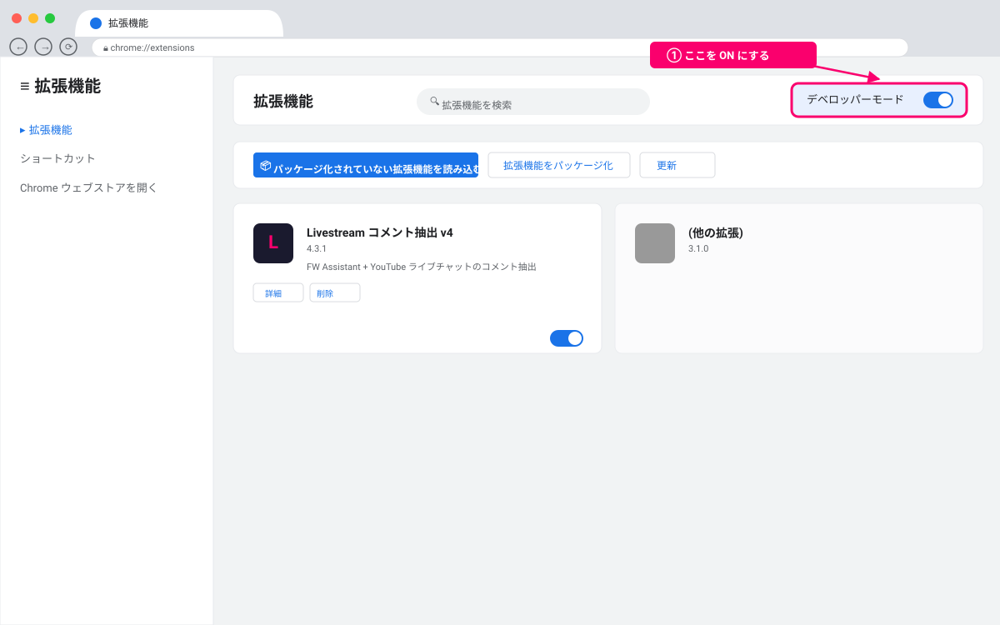
SCREENSHOT#02 — 「パッケージ化されていない拡張機能を読み込む」でフォルダ選択
extension/ フォルダを選択するダイアログ
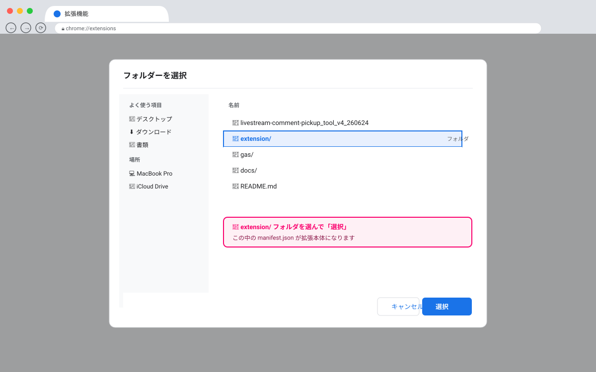
📊 参考：スプシの列構成（v4.4.0）
| 列 | 内容 |
|---|
| A | チェックボックス（手動・チェック=対応済み → グレーアウト） |
| B | timestamp（JST HH:MM:SS） |
| C | 配信媒体（FW = 青 / YT = 赤） |
| D | username |
| E | comment |
| F | 手動入力欄（小松原さんより / 出演者 / FW→潮崎さんへ を入れるとディレクター向けに即同期） |
✅ Chrome 拡張のインストールが終わったら、次の配信からは SECTION 03 を毎回 通します。
SECTION 03
【配信ごと】フルセットアップEVERY STREAM
毎回の配信前に必ずゼロから全工程を通します。 慣れれば10〜15分です。
順番に進めれば、当日担当者の手元で100%動く状態 が担保されます。
EVERY-STREAM RULE
「マスターは前回も使ったから動くはず」は禁物にございます。
① マスター複製 → ② setupMainSheetFormatting実行 → ③ 新規デプロイ → ④ 拡張URL更新 → ⑤ トリガー登録 → ⑥ onEdit権限承認 → ⑦ 動作確認。これを毎回通してください。
1
マスタースプシをコピーする
マスタースプシを開き ファイル → コピーを作成
名前は YYYY-MM-DD_配信名_コメント抽出 のように日付・配信名で識別可能に。
SCREENSHOT#05 — スプシの「コピーを作成」ダイアログ
ファイル名を「YYYY-MM-DD_配信名_コメント抽出」に変更した状態
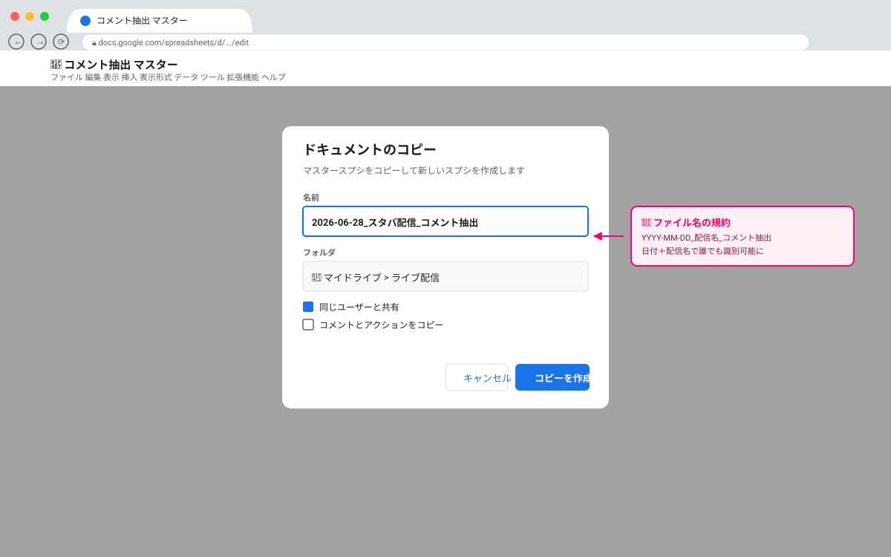
2
複製先の Apps Script エディタを開く
複製先スプシで
拡張機能 → Apps Script
コードはコピー済みです。必要に応じて Script Properties を再設定します：
- DEFAULT_SPREADSHEET_ID: 複製先スプシの ID（任意）
- BANNED_KEYWORDS / NEGATIVE_WORDS: 配信ごとにカスタマイズしたい場合のみ
SCREENSHOT#06 — 複製先スプシの Apps Script エディタ
「拡張機能 → Apps Script」で開いたエディタ画面
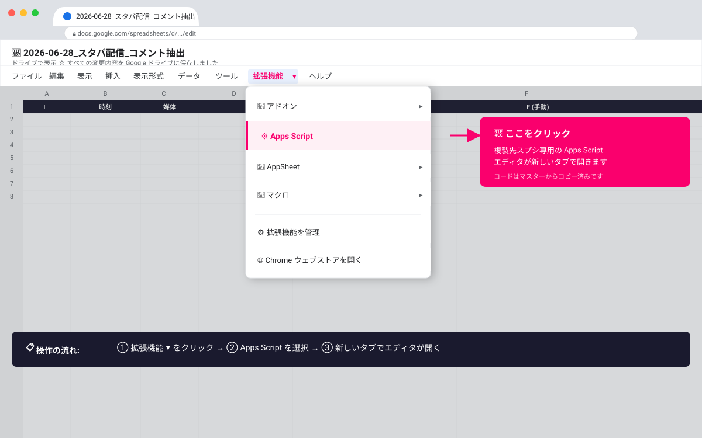
3
setupMainSheetFormatting() を 1 回だけ実行する
エディタ上部の関数選択で setupMainSheetFormatting を選んで ▶ 実行。
A 列にチェックボックスが入り、チェック→グレーアウトの条件付き書式が設定されます。
⚠ 基本冪等ですが、念のためこの配信用スプシに対して1回で止めること。
SCREENSHOT#07 — setupMainSheetFormatting 実行画面
関数選択 → 実行ボタンを押した直後の Apps Script エディタ
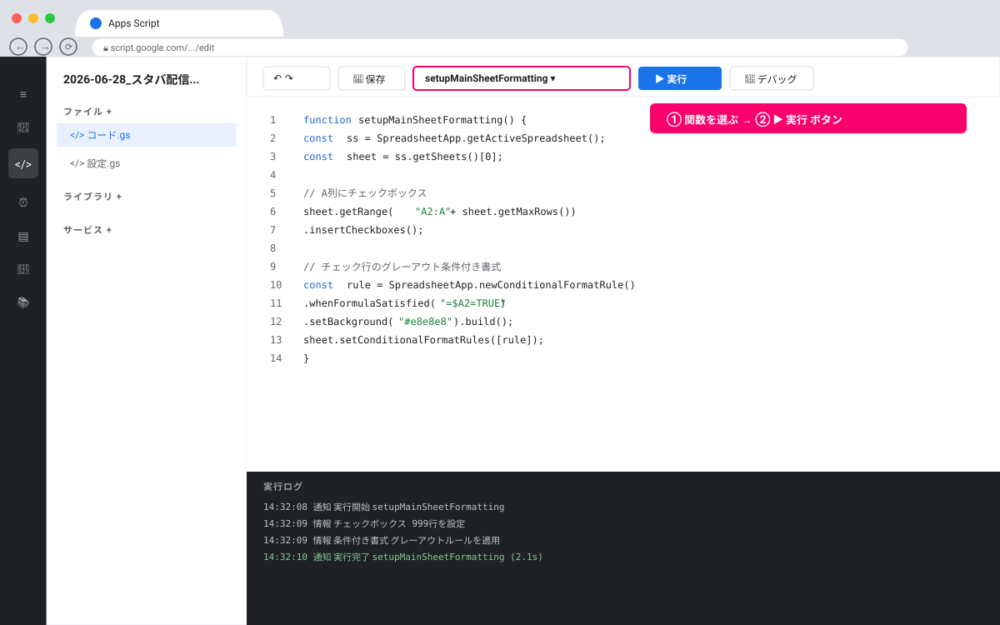
4
Web アプリとして新規デプロイする ★最重要
デプロイ → 新しいデプロイ → 種類: ウェブアプリ / 実行ユーザー: 自分 / アクセス: 全員
新しい Web アプリ URL が発行されます。URL は前の配信のものとは別物 なので必ずコピーしてください。
🚨 「動かない」事故の最頻原因はここの抜けです。
「デプロイを管理」での更新ではなく、必ず「新しいデプロイ」を選んでください。
発行されたURLは必ず popup の GAS URL 欄に貼り直すこと（古いURLのままだと前の配信のスプシに書き込んでしまいます）。
SCREENSHOT#08 — 新規デプロイの設定ダイアログ
「新しいデプロイ」のウェブアプリ設定画面（実行ユーザー=自分 / アクセス=全員）
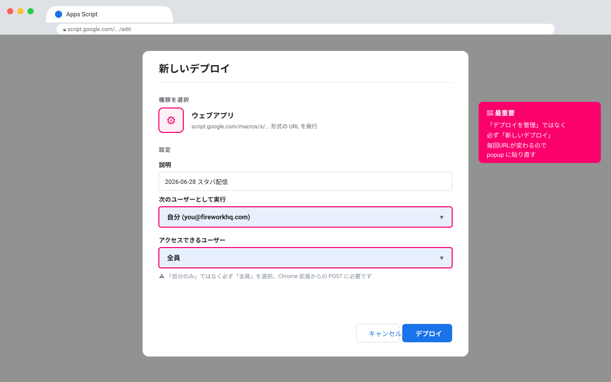
SCREENSHOT#09 — 発行された Web アプリ URL のコピー
デプロイ完了後の「ウェブアプリ URL」とコピーアイコン
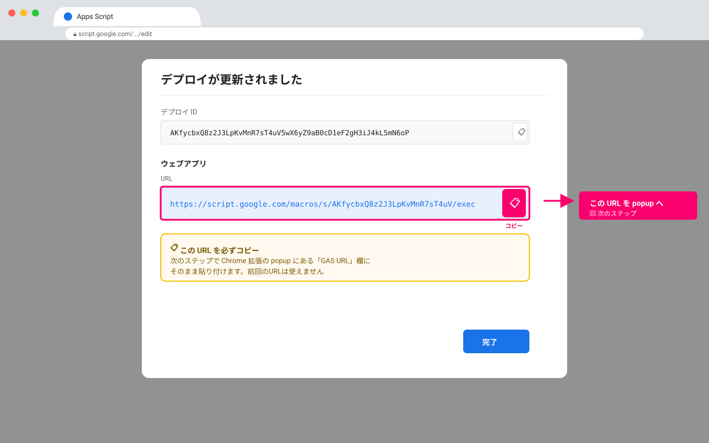
5
Chrome 拡張の GAS URL ＋ スプシ URL を更新する
拡張アイコンクリック → popup で
- GAS URL を ステップ4 で発行された新しい Web アプリ URL に貼り替え → 保存
- スプシ URL を今回の配信用スプシの URL に貼り替え → 保存
✅ スプシURLは丸ごとペースト可。例：https://docs.google.com/spreadsheets/d/<ID>/edit#gid=0
SCREENSHOT#10 — popup の GAS URL 入力欄
GAS URL 欄に新しい Web アプリ URL を貼り付けた状態
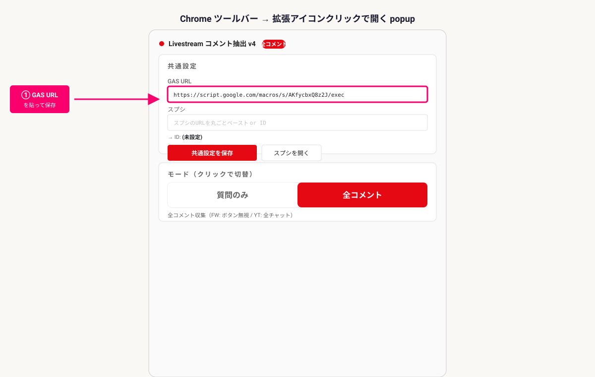
SCREENSHOT#11 — popup のスプシ URL 入力欄
スプシ URL 欄に新しい URL 貼り付け＋ID プレビュー表示の状態
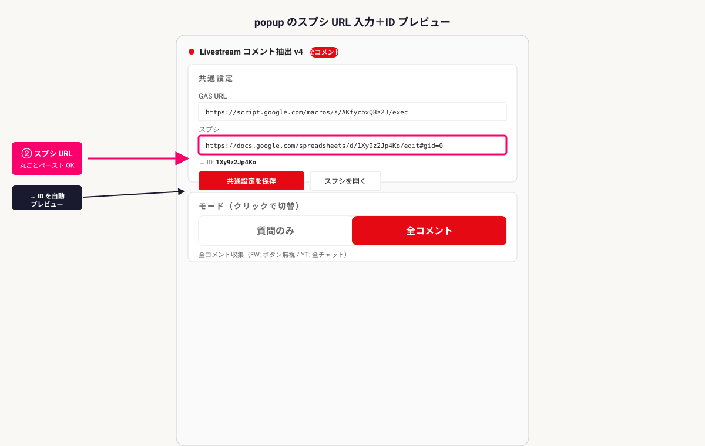
6
時間主導トリガーを登録する（ディレクター向け同期用）
Apps Script エディタ左の
⏰ トリガー →
+ トリガーを追加
- 実行する関数：syncAll
- イベントのソース：時間主導型
- トリガーのタイプ：分ベース → 1 分タイマー（推奨）
💡 削除・黄色塗りの双方向反映を担当します。配信中のリアルタイム性重視で 1 分間隔がおすすめ。
処理が 10 秒を超え始めたら 3〜5 分に伸ばしてチューニング可。
SCREENSHOT#12 — トリガー追加ダイアログ
関数=syncAll / 時間主導型 / 1分タイマー を選んだ状態
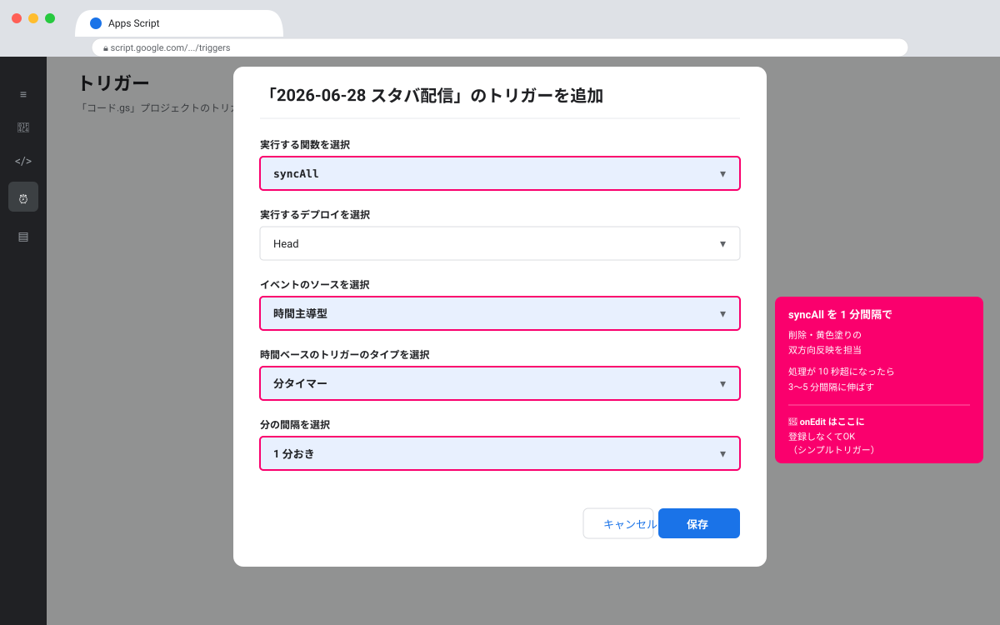
7
onEdit シンプルトリガーの権限承認 ★忘れがち
配信開始前に 必ず自分の手で 元シートの F 列に 出演者 と1度入力してください。
初回承認ダイアログが出るので 許可。以降は自動で動きます。
🚨 onEdit はシンプルトリガーゆえ、「人間が編集する」まで承認ダイアログが出ません。
編集ではなくApps Scriptエディタから手動実行すると TypeError: Cannot read properties of undefined エラーで失敗します。
必ずスプシのF列に入力する形で承認 してください。
SCREENSHOT#13 — onEdit 初回承認ダイアログ
F列に入力した直後に出る「権限を確認」ダイアログ
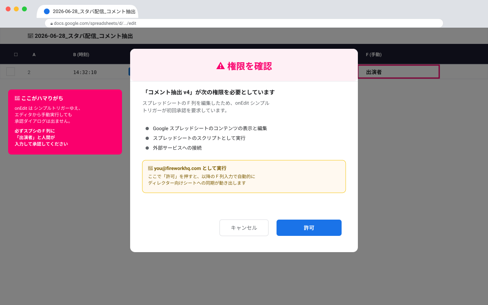
8
動作確認チェックリスト ★ここを通したら完了
配信開始30分前までに、以下3点が 全部 ✅ になっていることを担当者が確認してください。
PRE-FLIGHT CHECK
① テストPOSTで2行目に書き込まれるか
拡張からテストコメントを送信 → 配信用スプシの2行目に書き込みを確認
② F列に「出演者」と入力 → ディレクター向けシートに即時追加されるか
onEdit シンプルトリガーの動作確認＝権限承認が通っている証拠
③ ディレクター向けでチェック → 元シートにもチェックが付くか
双方向同期の確認＝時間主導トリガーが動いている証拠
SCREENSHOT#14 — 動作確認OK時のスプシ状態
テストコメントが2行目に入り、ディレクター向けにも同期されている画面
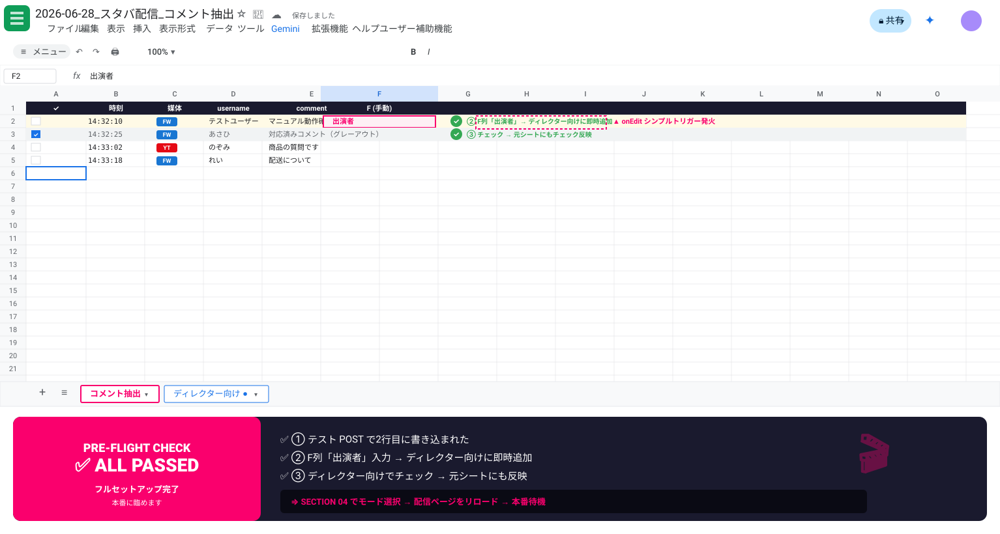
✅ 3つすべて通ったらフルセットアップ完了です。 あとは SECTION 04 でモードを選び、配信ページをリロードして本番に臨んでください。
SECTION 04
モード選択
popup の上半分にある 「質問のみ」 / 「全コメント」 トグルをクリックして、配信内容に合うモードを選んでください。
切替直後にバッジ表示が Q（青）／A（赤）に変わります。
1
モードを選ぶ
- 質問だけを抽出したい配信（Starbucks など） → 質問のみ をクリック
- 全コメントを取りたい配信（Samsung など） → 全コメント をクリック
SCREENSHOT#15 — popup のモード切替トグル
「質問のみ」「全コメント」のトグルが見える popup 上半分
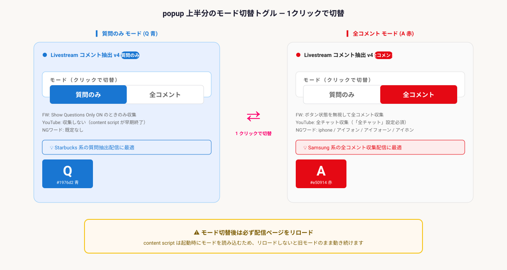
⚠ モード切替後は必ず配信ページをリロードしてください。
content script は起動時にモードを読み込むため、リロードしないと旧モードのまま動き続けます。
SECTION 05
配信時の運用
モードによって配信時にやることが少しだけ違います。下記のチェックリストに沿って進めてください。
Q
質問のみ 運用フロー
- popup → 質問のみ をクリック（バッジが Q 青になる）
- Firework Assistant モード を開いて配信ページをリロード
- 配信ページ上の 「Show Questions Only」ボタンを青 ON にする
- 質問コメントだけがスプシに記録されることを確認
- YouTube は何もしなくてOK（content script が早期終了するため）
SCREENSHOT#16 — FW Assistant の「Show Questions Only」ボタンが青 ON
配信ページ上の質問フィルタボタンが青く点灯している状態
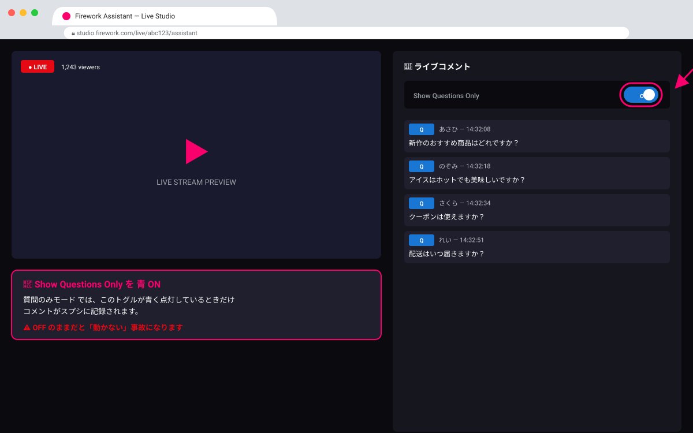
A
全コメント 運用フロー
- popup → 全コメント をクリック（バッジが A 赤になる）
- Firework / YouTube の配信ページをリロード
- FW: ボタン状態を無視して全コメント収集
- YouTube: チャット欄を 「全チャット」モード にしておけば全部記録 （※「トップチャット」ではないので注意！）
- iPhone 関連コメントは既定 NG ワードで除外されます
🚨 YouTube は必ず「全チャット」を選択！ デフォルトの「トップチャット」のままだと一部しか拾えません。
SCREENSHOT#17 — YouTube 配信ページのチャット「全チャット」設定
YouTube ライブのチャットメニューから「全チャット」を選んだ状態
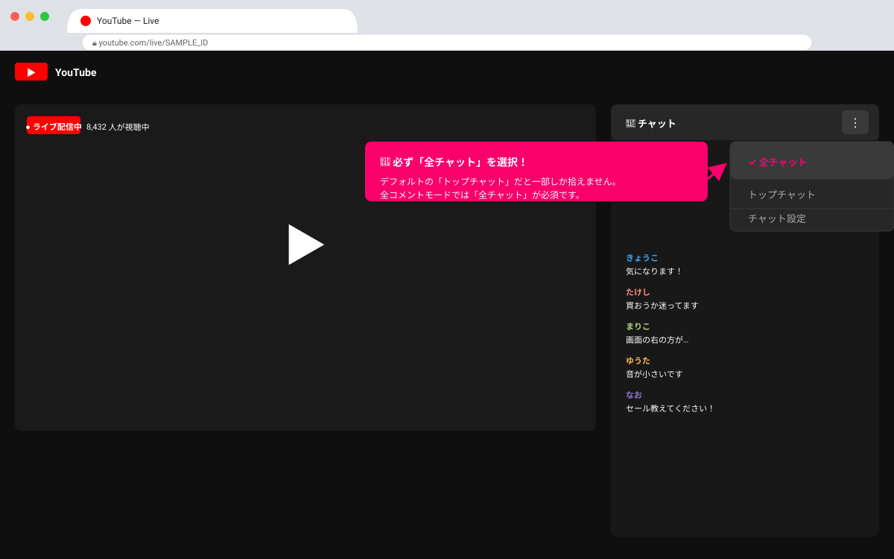
💡 F列を使ったディレクター向け同期：
スプシ F列に 小松原さんより / 出演者 / FW→潮崎さんへ のいずれかを入力すると、
その行が 「ディレクター向け」シートに即時追加 されます（onEdit トリガー）。
削除・書式同期は時間主導トリガー（1分間隔）が拾ってくれます。
SECTION 06
NGワード・誹謗中傷ワードの編集
popup の下半分「選択中モードの設定」エリアに、表示中のモードの辞書が出ます。
ここで NG ワードを追加・削除できます。
1
NG ワードの追加・削除
- 1行 1語 で入力。含まれていたら除外されます
- 大文字小文字無視・全角半角正規化・部分一致なので、ゆるく書けばOK
- 二重ゲート：content script で先に弾き、GAS 側でも再チェックされるので、保存後すぐ反映
- モードごとに辞書が独立しています（質問のみ／全コメントで別々）
SCREENSHOT#18 — popup 下半分の NG ワード編集エリア
「選択中モードの設定」で NG ワードと誹謗中傷ワードを編集している画面
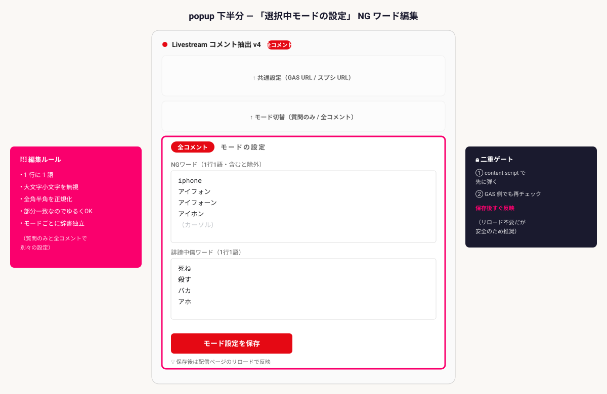
SECTION 07
触ってはいけないもの
複製先で以下を変更すると即座にロジックが壊れます。コード前提として固定されている要素です。
🚫 DO NOT TOUCH
列構成 A〜F
doPost / onEdit / syncAll が決め打ち
シート名「ディレクター向け」
コード内ハードコード
F 列の 3 値リテラル
小松原さんより / 出演者 / FW→潮崎さんへ
allowedValues 配列にハードコード
元シート = 一番左のシート という前提
getSheets()[0] 決め打ち
SECTION 08
トラブルシューティング
配信中にハマりやすい症状と対処をまとめてあります。配信前にざっと目を通しておくと安心です。
コメントが何も書き込まれない
SECTION 03 ステップ4「新規デプロイ」をやり直し、新URLを popup に貼り直す
質問のみモードで FW が拾えない
配信ページの「Show Questions Only」ボタンが 青 ON か確認
YouTube が拾われない
モードが 全コメント か / チャット欄を 「全チャット」 モードに
スプシ URL を貼ったらエラー
https://docs.google.com/spreadsheets/d/<ID>/... 形式か確認
iPhone が拾われちゃう
popup のモード設定で iphone / アイフォン を NG に追加
コメントが 4 桁行（10001 行目以降）に飛ぶ
v4.4.0 以降では発生しません。発生時は 古い GAS のまま → 再デプロイで解消
ディレクター向けに反映されない
① F 列に値を入れたか確認
② 時間主導トリガー（syncAll）が登録されているか確認
③ onEdit権限が通っているか（SECTION 03 ステップ7）
onEdit を手動実行で TypeError: Cannot read properties of undefined (reading 'range')
onEdit はシンプルトリガー。エディタ実行ではなく 実際に F 列を編集 して動作確認する